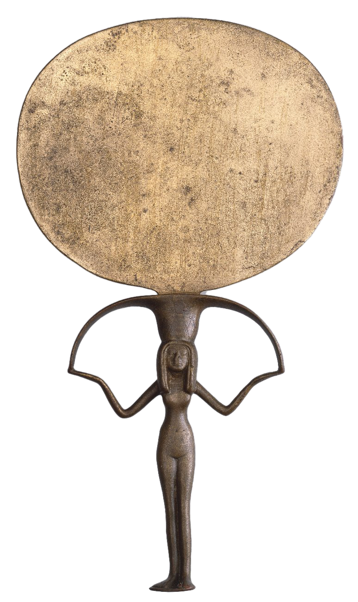

Enter
Mirrors are used as a symbol for portals and their convergence—mirror as portal—occurs at the junction between ordinary and
nonordinary realities
. The bridging has theoretical and methodological implications for
art
,
technology
and
ritual.
Map goes here
